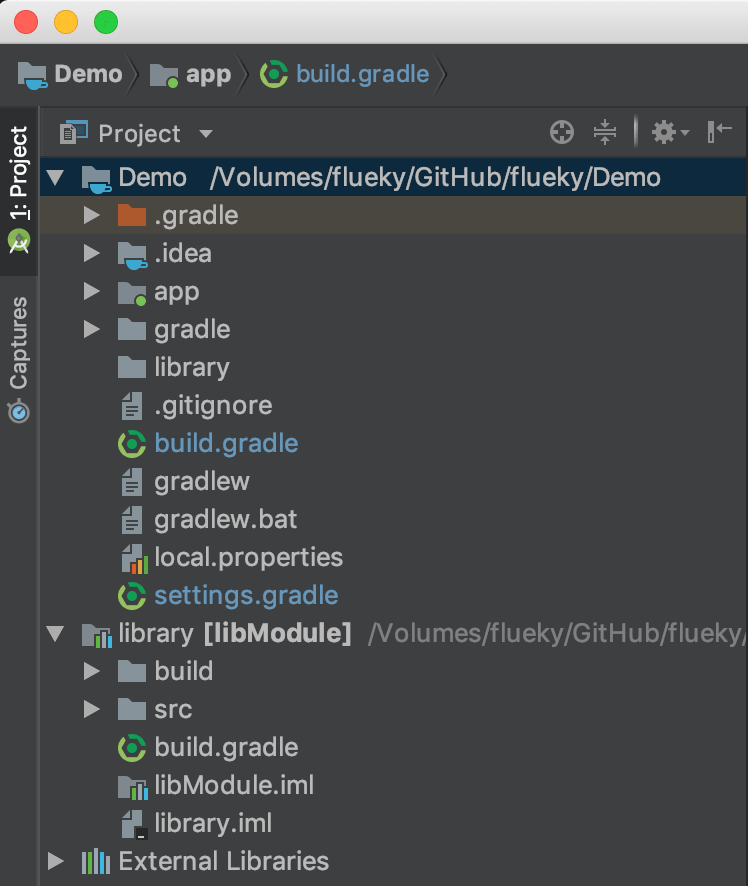

给AndroidStudio工程添加依赖
前一篇博客详细讲了怎样创建一个安卓工程，见[从零构建Android工程](/001)，今天在它的基础上演示怎样对主工程添加依赖。
进入主题之前，先声明下，build版本3.x以上已不在支持compile指令，使用implementation或api。假设有两个 module A 和 B，并且 A 依赖 B。如果在 B 中使用implementation依赖了jar、aar或module，那么 A 中无法获取到被依赖库的 api。因此，api 指令诞生了。
1 依赖jar
在app目录下新建libs文件夹，并将需要的jar文件拷贝到libs目录下。
方式一：
逐个jar文件添加依赖。
1 | implementation files('libs/json_simple-1.1.jar') |
方式二：
依赖整个libs目录
1 | implementation fileTree(include: '*.jar', dir: 'libs') |
两种方式可以共存。如果被依赖的module中有jar要传递依赖，则可以单独使用api指令声明。不推荐使用api fileTree。
2 依赖aar
aar是Android专用的库形式，aar文件不仅包含java代码（class.jar文件），还可以包含asset目录和res目录的资源。同jar一样，有两种依赖方式，并且都放在libs目录。
方式一：
逐个aar文件添加依赖。
1 | implementation(name: 'fbcore-1.5.0', ext: 'aar') |
如果出现提示**Failed to resolve: :fbcore-1.5.0:**，那么还需要添加：
1 | repositories { |
该配置可以放在module的build.gradle文件，还可以放在项目的build.gradle文件中。
1 | allprojects{ |
方式二：
依赖整个libs目录
1 | implementation fileTree(include: '*.aar', dir: 'libs') |
同jar一样，两种方式可以共存。
但是，下面两张图中，第一张是逐个aar依赖的，第二张是依赖整个libs目录的。
因此还是建议逐个aar依赖，在工程目录中显示效果更友好些。
3 依赖module
见[从零构建Android工程](/001/#新建库module目录)，已经描述了怎样创建并依赖module。
4 依赖外部module
通常情况下，我们依赖的module同主module在同一个工程目录下，用上述方式依赖即可。但是，AndroidStudio还支持依赖其他位置文件夹的module。
首先制造如图的目录结构，library同Demo工程目录同级。
其次在settins.gradle文件夹中添加：
1 | include 'libModule' |
构建后，工程结构如图
使用implementation project(':libModule')与主项目关联。
5 依赖远程库
Gradle已经支持三个maven库地址。已经包含了大多数常用的开发库。
1 | repositories{ |
通常我们使用自己开发的maven库或使用别人的maven库不在上述的三个仓库中，那么需要指定maven库地址。
1 | repositories { |
上面的地址仅供参考，并非实际的仓库地址，需要修改成库的实际地址。
配置好maven库地址后，接下来就可以直接引用远程库。
1 | implementation 'com.google.code.gson:gson:2.8.5' |
上述远程库名称由三部分构成，groupid，artifactid，version。
- groupid：前半部分，com.google.code 表示该库隶属的组织或公司，后半部分gson表示该公司的项目名称。
- artifactid：表示模块名称。
- version：版本
觉得有用？那打赏一个呗。[去打赏](/donate/)